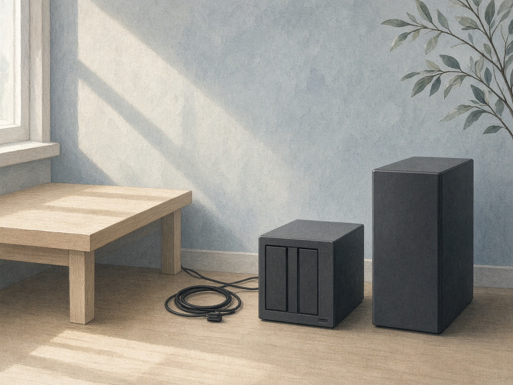
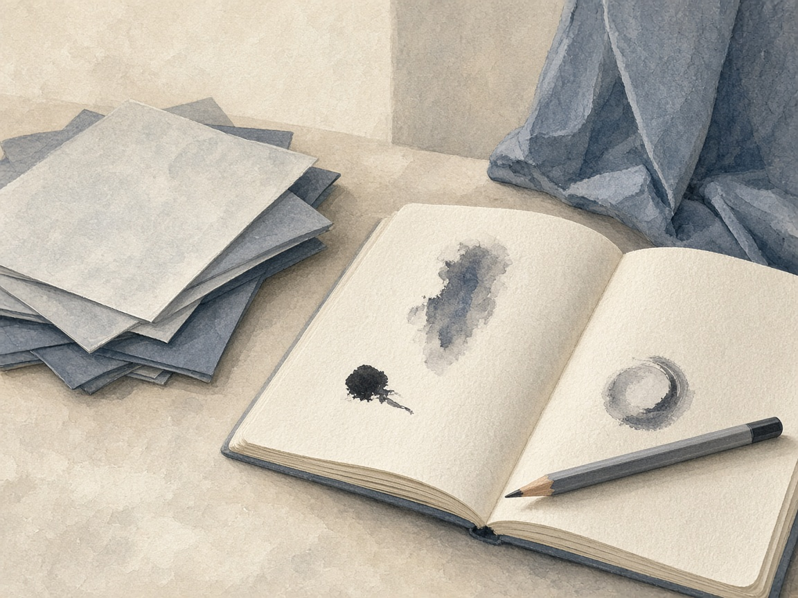

有些事推进了一步，表现出来的样子是决定先不做。
一件具体的事
周一，我想把闲置的 Windows 电脑和 NAS 再利用起来。
讨论很快热闹起来。本地模型、远程 GPU、自动化架构，手里每一件设备似乎都能找到一个新职位。一套东西还没搭好，下一套的轮廓已经出来了。
但越聊，我越回答不了一个问题：它们究竟能给我带来什么真实帮助？
于是我把讨论停下来，在随手记里写了一小段，题目叫《不要为了利用工具而创造需求》。结论很具体：暂时不部署新的基础设施。遇到明确的问题，先用现有工具验证；真碰到瓶颈，再考虑本地硬件。
这件事没有安装完成的提示，也没有一个可以展示的新页面。电脑还是那台电脑，NAS 还是原来的 NAS。我只是决定，让它们继续闲着。

这件事让我看见了什么
第二天，类似的感觉又出现了。
我写下：「手里同时在干的事情很多，但专注的事情很少。浏览信息不少，思考重点不多。」
每天看模型更新、工具推荐、日常闲聊，偶尔刷到真正与投资有关的帖子，反而未必认真读。信息一直经过我，我却很难说出，哪一条改变了自己的理解。
回头看，给设备找用途和给信息找收藏夹，有一个相似的起点：先看见它能做什么，再想办法把自己放进去。问题越拆越细，方案越来越完整，最初那个「我需要什么」却还悬着。
所以这周把投资重新放回主线，也给自己留了一个更具体的入口：从已经关心的公司开始研究。起初想把整个美股市场从头梳理，画出行业地图，展开后又发现摊子太大，便收拢一部分。最后承认，从自己的持仓切进去，我更愿意认真读。
这至少比再搭一套系统更接近问题了。
但接近问题以后，还有另一关。读 AI 报告时，我追问它为什么得出某个判断，随后看到建议被修改、依据不足的价格阈值被撤回。后来又有一项影响估值的数据得到纠正。原来，报告已经写完，判断仍可能没有站稳。
我在笔记里给自己重新分了工：先读 AI 提供的信息，加上自己的理解，形成判断，再拿回去与它讨论。这样慢一些，也未必每次都对，却能让我知道，自己究竟在哪一步同意了它。
「今天我做的事情，究竟改变了什么？」这句话本周反复出现。用它检查忙碌，会发现有些工作值得继续，有些只能先放下。没有必要为了让设备忙起来，再让自己忙一轮。
一个没想透的问题
怎样判断，自己已经形成了一个独立判断？
这周我也试着把一次大跌拆开：结果、直接原因、深层原因、根本原因。拆完以后，我得到了一套更整齐的解释，却仍然分不清哪一层是真的。第一性原理听起来像一把更快的刀，但如果前提没有核实，它只是把同一个猜测切得更细。
我可以把报告读完，也可以把它复述得很顺。但如果换一种语气、换一份报告，我就跟着改变立场，那份理解可能仍然借在别人那里。

下周想从一家公司试起：先不看报告结论，用自己的话写下它为什么能赚钱、支持判断的证据，以及什么情况出现会让我承认看错。再与原报告对照，看看自己漏了什么，又有什么理由坚持不同意见。
如果这一步能做出来，那些工具才算帮我多想清了一点。